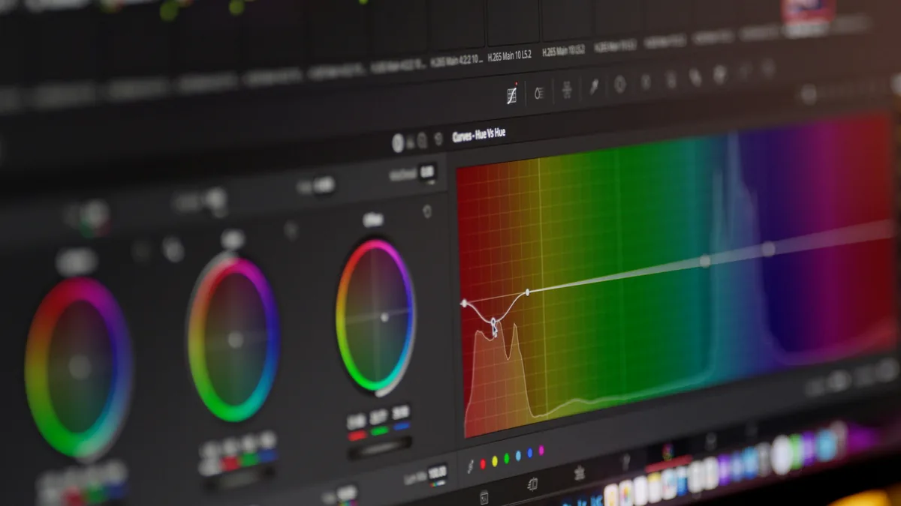
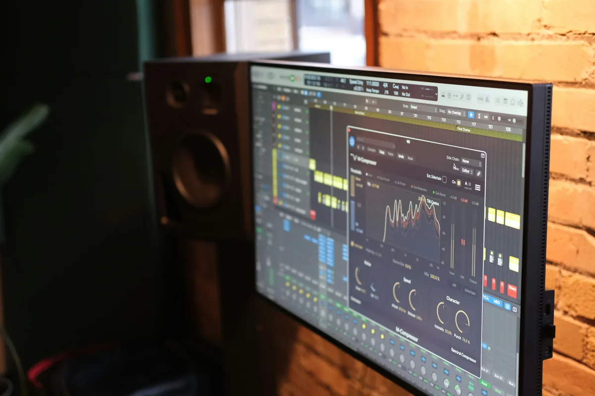
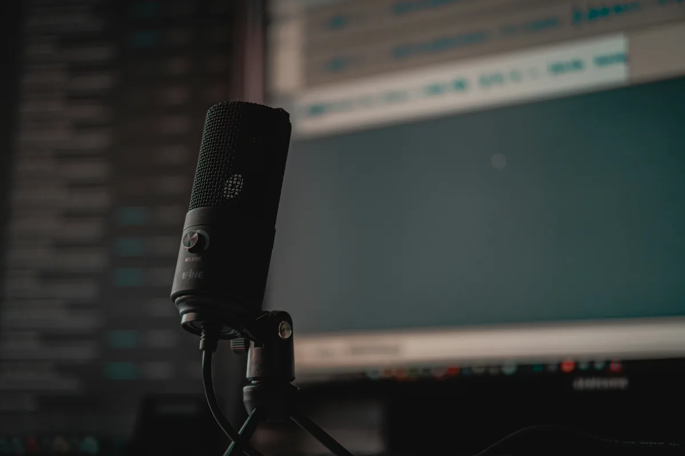
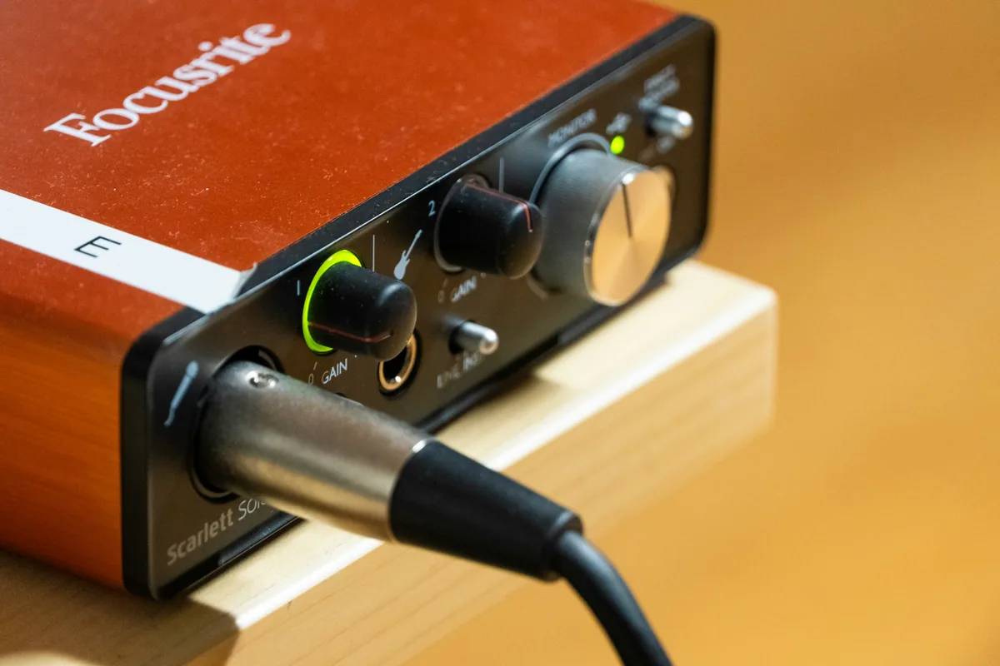
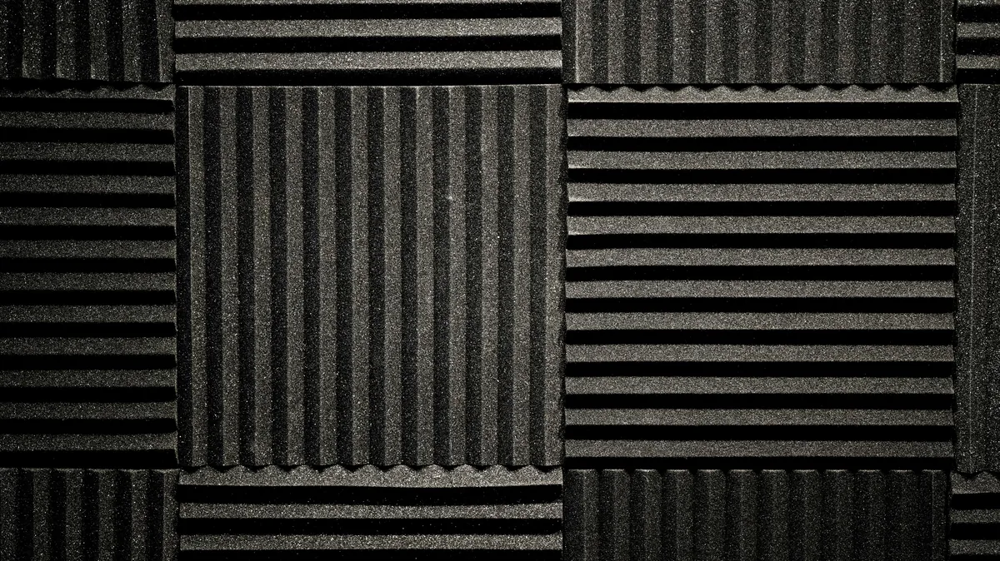
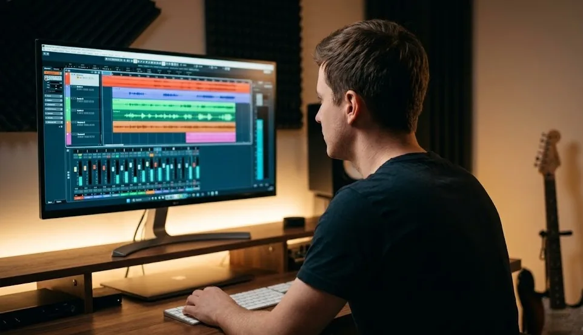

Ile Spotify płaci za jedno odtworzenie? Prawda o tantiemach
Ile naprawdę zarabia muzyk na jednym streamie? Realne stawki, przykład liczbowy i co faktycznie wpływa na zarobki ze streamingu.
Czytaj
DAW (Digital Audio Workstation) to program, w którym nagrywasz, układasz, edytujesz i miksujesz muzykę. To centrum dowodzenia całej produkcji - od pierwszego pomysłu po gotowy plik. Wyjaśniamy, z czego się składa, czym różni się od zwykłego edytora audio i jak wybrać swój pierwszy.
Przeczytaj przewodnik
Ile naprawdę zarabia muzyk na jednym streamie? Realne stawki, przykład liczbowy i co faktycznie wpływa na zarobki ze streamingu.
CzytajMix i mastering wokalu krok po kroku - jak wyczyścić ścieżkę, ustawić EQ, kompresję, de-esser i pogłos oraz zmasterować utwór w domowym studiu.
CzytajPrawa autorskie w muzyce - jak działają w Polsce i na świecie, czym jest ZAIKS, Content ID na YouTube, sample clearance i licencje Creative Commons. Praktyczny przewodnik dla producentów.
Czytaj
WAV, MP3, FLAC, AIFF - czym różnią się formaty plików audio i który wybrać do nagrywania, miksu, masteringu i streamingu? Praktyczny przewodnik bez zbędnego żargonu.
Czytaj
Czym są częstotliwości w muzyce i jak wpływają na brzmienie? Poznaj pasma - bas, środek, góra - i dowiedz się, co słyszysz w każdym z nich. Praktyczna wiedza dla producentów.
Czytaj
Słuchawki czy monitory studyjne - co wybrać do miksowania w domu? Poznaj różnice, wady i zalety obu rozwiązań oraz praktyczne wskazówki dla początkujących.
Czytaj
Czym są wtyczki VST i które warto mieć na start? Przegląd darmowych i płatnych pluginów do EQ, kompresji, reverbu i masteringu - bez przepłacania.
Czytaj
Szukasz mikrofonu do nagrywania w domu? Sprawdź, który model do 500 zł sprawdzi się przy wokalu, podcaście i streamingu. Konkretne modele, porównanie i porady.
Czytaj
Jak wybrać interfejs audio do home studio? Porównujemy najlepsze modele w przedziale do 300, 600 i 1000 zł. Przetworniki, wejscia, opóźnienie - co naprawdę ma znaczenie.
Czytaj
Czym jest LUFS, True Peak i normalizacja głośności? Dowiedz się, jak przygotować master na Spotify, Apple Music i YouTube - konkretnie i bez lania wody.
Czytaj
Sidechain compression, volume automation, ducking - poznaj techniki kontroli dynamiki w DAW, które oddzielają amatorski miks od profesjonalnego brzmienia.
Czytaj
Sztuczna inteligencja generuje coraz więcej muzyki. Sprawdzamy, jak to wpływa na zarobki muzyków, jakość produkcji i rynek streamingu.
Czytaj
Jak poprawić akustykę domowego pokoju bez wydawania fortuny? Szafa z ubraniami, wełna mineralna, pierwsze punkty odbicia - sprawdzone sposoby krok po kroku.
Czytaj
Kto ma lepszy dźwięk i kto płaci artystom więcej? Tabele jakości i stawek za stream dla 8 platform.
Czytaj
Czym jest cyfrowa stacja robocza, z czego się składa i jak różni się od zwykłego edytora audio.
Czytaj
Przegląd głównych DAW-ów: platformy, mocne strony i dla kogo każdy z nich jest najlepszy.
Czytaj
Co dzieje się na każdym z etapów, w jakiej kolejności następują i jakie mity warto obalić.
Czytaj
Praktyczny przewodnik: co naprawdę potrzebne na start, pierwsze kroki i czego unikać.
Czytaj
Jak wybrać mikrofon, ustawić akustykę pokoju domowymi sposobami i nagrać czysty wokal bez drogiego studia.
Czytaj
Czym jest equalizer, jakie ma rodzaje i jak używać go w miksie - od high-pass filtra po kształtowanie barwy instrumentów.
Czytaj
Threshold, ratio, attack, release - poznaj parametry kompresora i dowiedz się, kiedy i jak używać kompresji bez przekompresowania.
Czytaj
Minimalny zestaw do domowego studia nagrań: co kupić, czego unikać i jak zacząć nagrywać bez przepłacania.
Czytaj
Praktyczny przewodnik dla osób, które chcą zacząć naukę miksu i masteringu od zera. Kolejność kroków, sprzęt minimum i najczęstsze pułapki.
CzytajPoznaj DAW - program, w którym powstaje cała muzyka. Sprawdź, czym jest DAW.
Porównaj popularne DAW-y i znajdź ten dla siebie. Zobacz przegląd programów.
Dowiedz się, co realnie potrzebne na start. Przeczytaj poradnik startowy.
Zrozum, co naprawdę robią te etapy. Poznaj różnice.